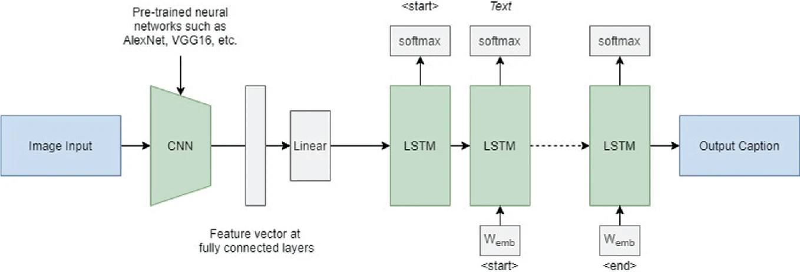
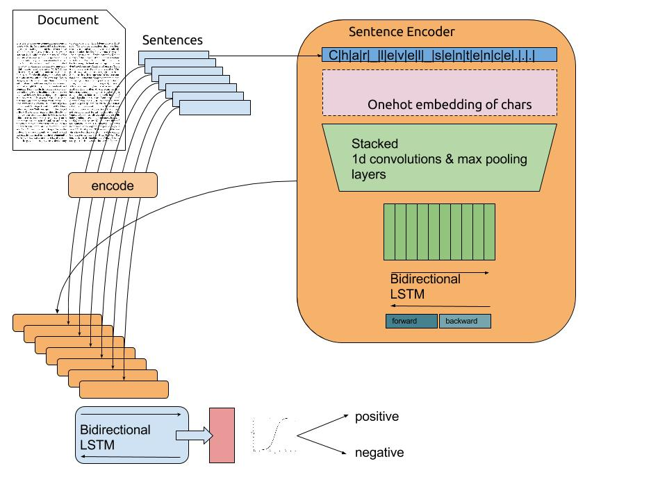

Natural Language Processing
word2vec
The most famous application of RNNs is Natural Language Processing (NLP): text understanding, translation, etc… Each word of a sentence has to be represented as a vector \mathbf{x}_t in order to be fed to a LSTM. Which representation should we use?
The naive solution is to use one-hot encoding, one element of the vector corresponding to one word of the dictionary.

{kind=link}
One-hot encoding is not a good representation for words:
- The vector size will depend on the number of words of the language:
- English: 171,476 (Oxford English Dictionary), 470,000 (Merriam-Webster)… 20,000 in practice.
- French: 270,000 (TILF).
- German: 200,000 (Duden).
- Chinese: 370,000 (Hanyu Da Cidian).
- Korean: 1,100,373 (Woori Mal Saem)
- Semantically related words have completely different representations (“endure” and “tolerate”).
- The representation is extremely sparse (a lot of useless zeros).

word2vec (Mikolov et al., 2013) learns word embeddings by trying to predict the current word based on the context (CBOW, continuous bag-of-words) or the context based on the current word (skip-gram). See https://code.google.com/archive/p/word2vec/ and https://www.tensorflow.org/tutorials/representation/word2vec for more information.
It uses a three-layer autoencoder-like NN, where the hidden layer (latent space) will learn to represent the one-hot encoded words in a dense manner.

word2vec has three parameters:
- the vocabulary size: number of words in the dictionary.
- the embedding size: number of neurons in the hidden layer.
- the context size: number of surrounding words to predict.
It is trained on huge datasets of sentences (e.g. Wikipedia). After learning, the hidden layer represents an embedding vector, which is a dense and compressed representation of each possible word (dimensionality reduction). Semantically close words (“endure” and “tolerate”) tend to appear in similar contexts, so their embedded representations will be close (Euclidian distance). One can even perform arithmetic operations on these vectors!
queen = king + woman - man

Applications of RNNs
Classification of LSTM architectures
Several architectures are possible using recurrent neural networks:

- One to One: classical feedforward network.
- Image \rightarrow Label.
- One to Many: single input, many outputs.
- Image \rightarrow Text.
- Many to One: sequence of inputs, single output.
- Video / Text \rightarrow Label.
- Many to Many: sequence to sequence.
- Text \rightarrow Text.
- Video \rightarrow Text.
Image caption generation
Show and Tell (Vinyals et al., 2015) uses the last FC layer of a CNN to feed a LSTM layer and generate words. The pretrained CNN (VGG16, ResNet50) is used as a feature extractor. Each word of the sentence is encoded/decoded using word2vec. The output of the LSTM at time t becomes its new input at time t+1.

Show, attend and tell (Xu et al., 2015) uses attention to focus on specific parts of the image when generating the sentence.


Next character/word prediction
Characters or words are fed one by one into a LSTM. The desired output is the next character or word in the text.
Example:
- Inputs: To, be, or, not, to
- Output: be
The text below was generated by a LSTM having read the entire writings of William Shakespeare, learning to predict the next letter (see http://karpathy.github.io/2015/05/21/rnn-effectiveness/). Each generated character is used as the next input.
PANDARUS:
Alas, I think he shall be come approached and the day
When little srain would be attain'd into being never fed,
And who is but a chain and subjects of his death,
I should not sleep.
Second Senator:
They are away this miseries, produced upon my soul,
Breaking and strongly should be buried, when I perish
The earth and thoughts of many states.
DUKE VINCENTIO:
Well, your wit is in the care of side and that.
Second Lord:
They would be ruled after this chamber, and
my fair nues begun out of the fact, to be conveyed,
Whose noble souls I'll have the heart of the wars.
Clown:
Come, sir, I will make did behold your worship.More info: http://www.thereforefilms.com/sunspring.html
Sentiment analysis
Sentiment analysis consists of attributing a value (positive or negative) to a text. A 1D convolutional layers “slides” over the text, each word being encoded using word2vec. The bidirectional LSTM computes a state vector for the complete text. A classifier (fully connected layer) learns to predict the sentiment of the text (positive/negative).

Question answering / Scene understanding
A LSTM can learn to associate an image (static) plus a question (sequence) with the answer (sequence). The image is abstracted by a CNN pretrained for object recognition.

seq2seq
The state vector obtained at the end of a sequence can be reused as an initial state for another LSTM. The goal of the encoder is to find a compressed representation of a sequence of inputs. The goal of the decoder is to generate a sequence from that representation. Sequence-to-sequence (seq2seq (Sutskever et al., 2014)) models are recurrent autoencoders.

The encoder learns for example to encode each word of a sentence in French. The decoder learns to associate the final state vector to the corresponding English sentence. seq2seq allows automatic text translation between many languages given enough data. Modern translation tools are based on seq2seq, but with attention.